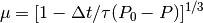
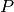
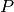

BerendsenBarostatAnisotropic - Berendsen barostat Object¶
#TODO fix these comments
This is the Berendsen barostat implementation according to the original paper [Berendsen84].
If Berendsen barostat is defined (as a property of integrator) then at the each run the system size
and the particle coordinates will be scaled by scaling parameter  according to
the formula:
according to
the formula:

where  - integration timestep,
- integration timestep,  - time parameter (coupling parameter),
- time parameter (coupling parameter),
 - external pressure and  - instantaneous pressure.
- external pressure and  - instantaneous pressure.
Example:
>>> berendsenP = espressopp.integrator.BerendsenBarostatAnisotropic(system)
>>> berendsenP.tau = 0.1
>>> berendsenP.pressure = 1.0
>>> integrator.addExtension(berendsenP)
!IMPORTANT In order to run npt simulation one should separately define thermostat as well (e.g. BerendsenThermostat).
Definition:
In order to define the Berendsen barostat
>>> berendsenP = espressopp.integrator.BerendsenBarostatAnisotropic(system)one should have the System defined.
Properties:
berendsenP.tau
The property ‘tau’ defines the time parameter
.berendsenP.pressure
The property ‘pressure’ defines the external pressure
.
Setting the integration property:
>>> integrator.addExtension(berendsenP)It will define Berendsen barostat as a property of integrator.
One more example:
>>> berendsen_barostat = espressopp.integrator.BerendsenBarostatAnisotropic(system)
>>> berendsen_barostat.tau = 10.0
>>> berendsen_barostat.pressure = 3.5
>>> integrator.addExtension(berendsen_barostat)
Canceling the barostat:
If one do not need the pressure regulation in system anymore or need to switch the ensamble or whatever :)
>>> # define barostat with parameters >>> berendsen = espressopp.integrator.BerendsenBarostatAnisotropic(system) >>> berendsen.tau = 0.8 >>> berendsen.pressure = 15.0 >>> integrator.addExtension(berendsen) >>> ... >>> # some runs >>> ... >>> # disconnect Berendsen barostat >>> berendsen.disconnect() >>> # the next runs will not include the system size and particle coordinates scalingConnecting the barostat back after the disconnection
>>> berendsen.connect()
-
espressopp.integrator.BerendsenBarostatAnisotropic(system)¶ Parameters: system –